按排名推荐,前三位支持私有化部署,所以优先级比较高
kooteam
介绍
kooteam 一款国产开源的项目管理工具,排名非常高,功能非常强大 环境为 java + mysql
是否收费
开源,免费
演示地址
大致界面

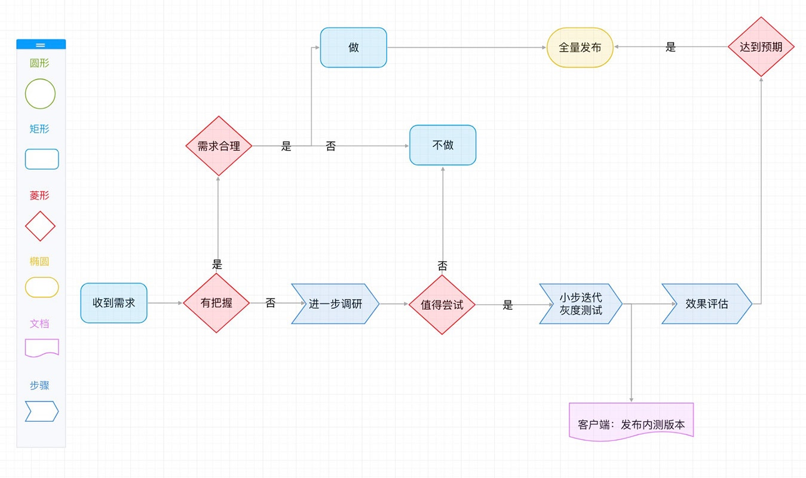
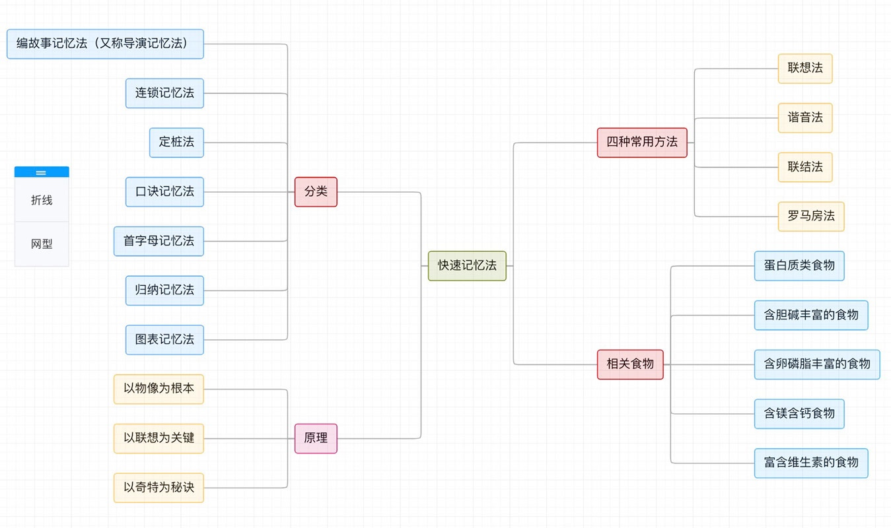
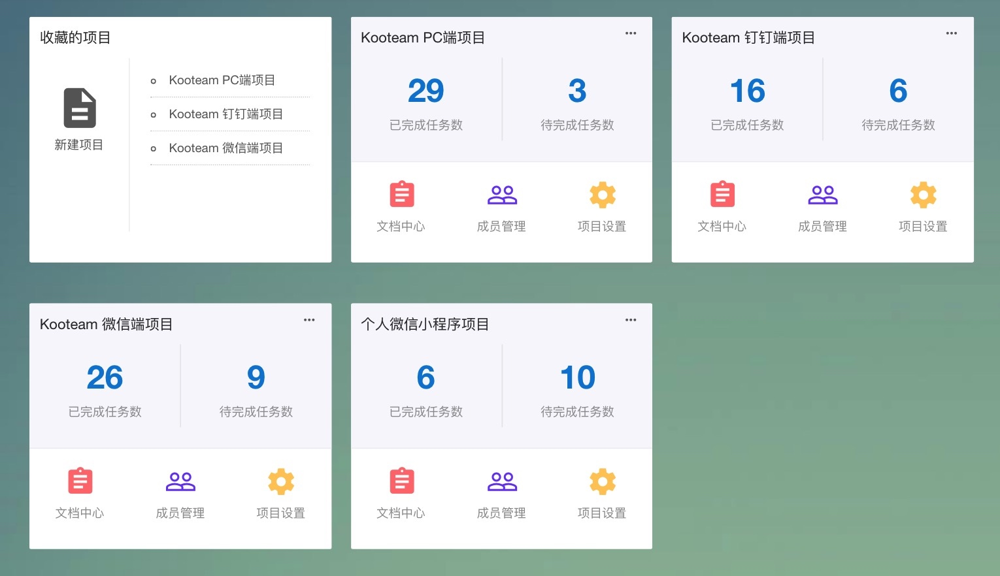
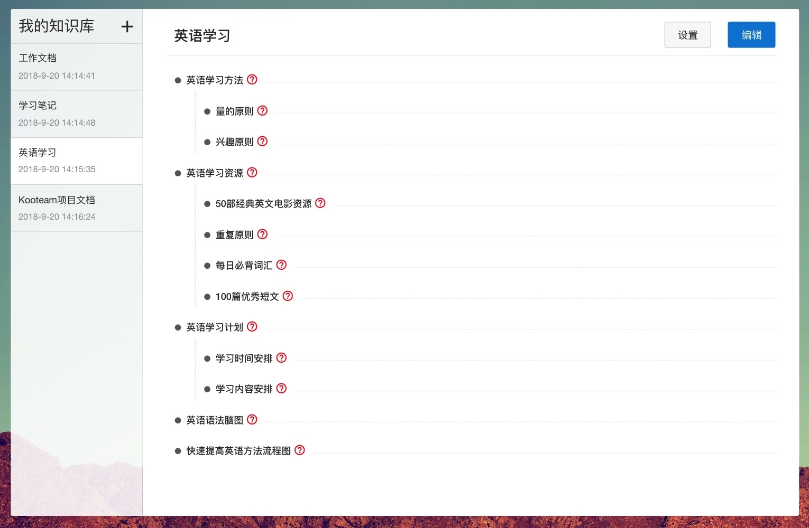
禅道
描述
禅道 是非常老牌的项目管理工具了,功能强大,开源免费,环境的话是 php+ mysql
是否收费
开源,免费,可私有部署, 专业版收费
项目演示地址
大致界面
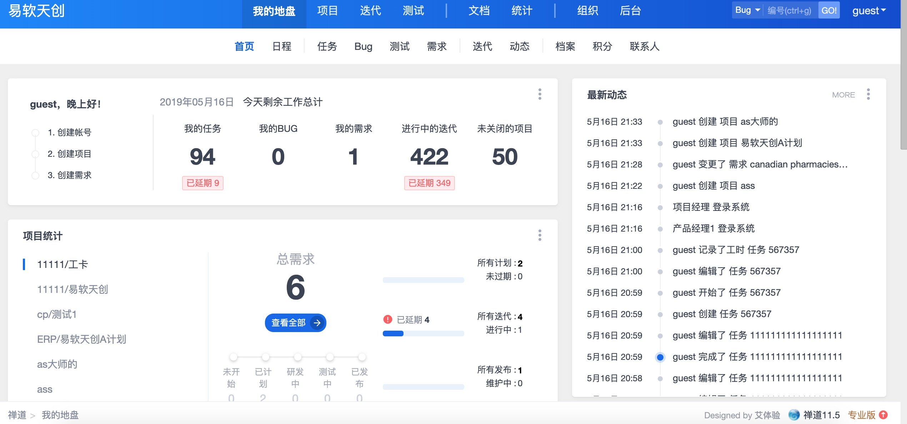
Phabricator
描述
官网 是facebook开源的一款项目管理工具,功能非常强大,
支持 code review,制定任务管理,bug追踪,文档管理,工作面板等功能
无中文界面
环境为 php+mysql
是否收费
开源,免费,可私有部署
项目演示地址
大致界面
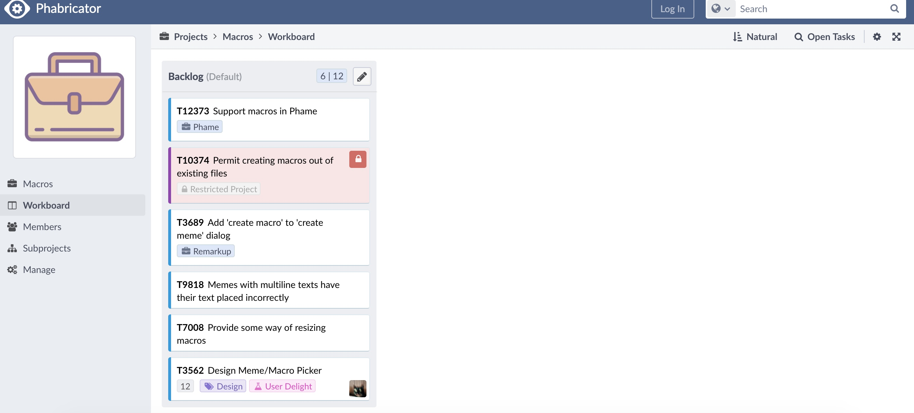
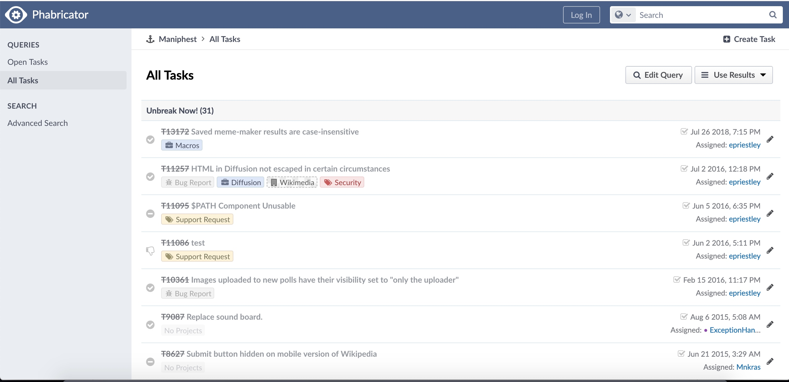

Trello
描述
Trello 是一个团队协作的面板软件,简洁,功能丰富
是否收费
免费,Power-Ups收费
项目演示地址
注册地址 注册即可体验
大致界面
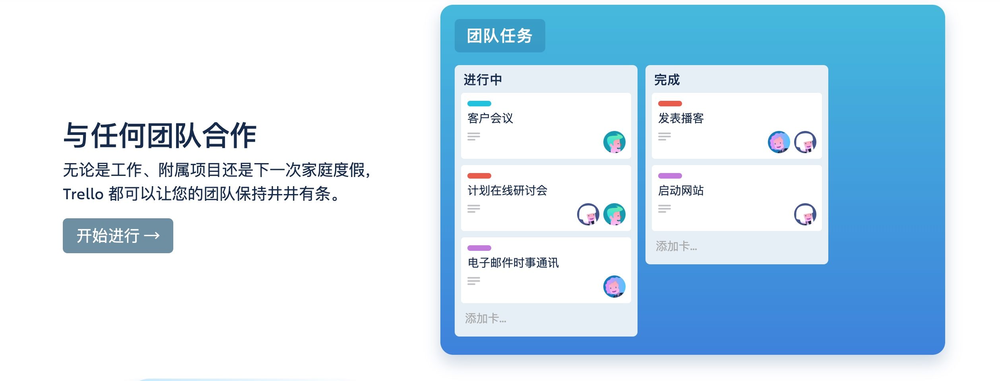
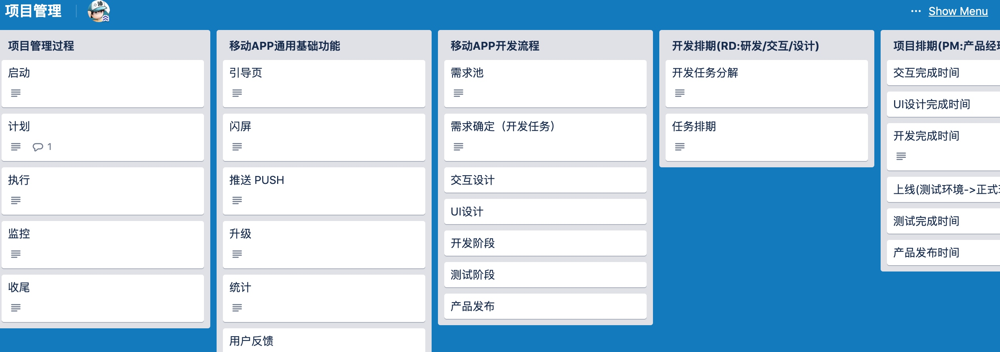
Worktile
描述
Worktile 是一个国产的项目,类似于 trello, 不推荐
是否收费
< 10 人免费, >= 10人 399年
演示地址
注册 注册即可
jira
描述
JIRA 是一个缺陷跟踪管理系统, 环境 java, 感觉界面太老了,操作也不便捷,不推荐
是否收费
收费, 但有破解版
界面
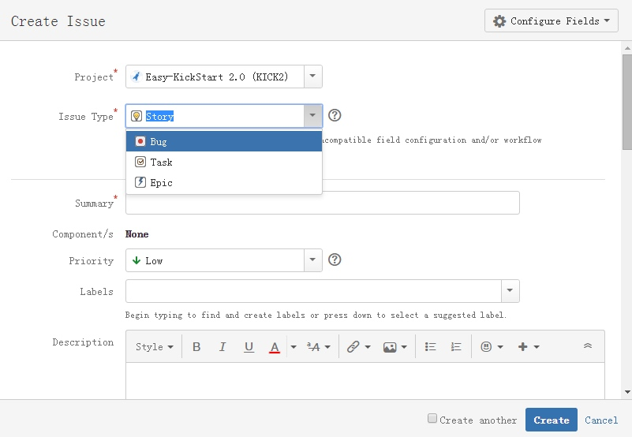
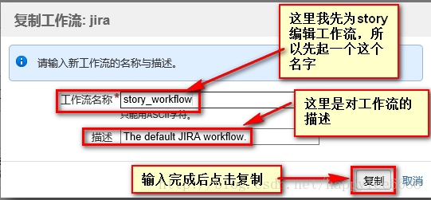